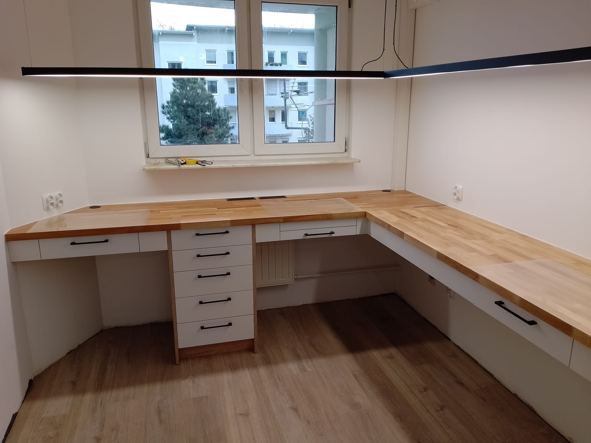
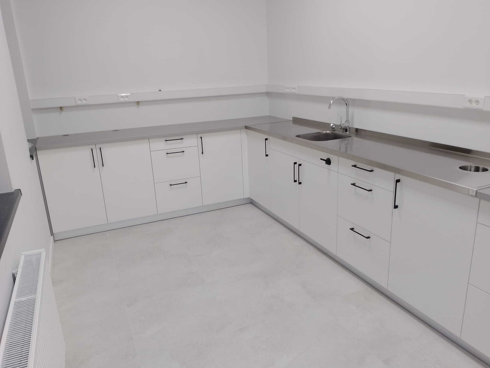
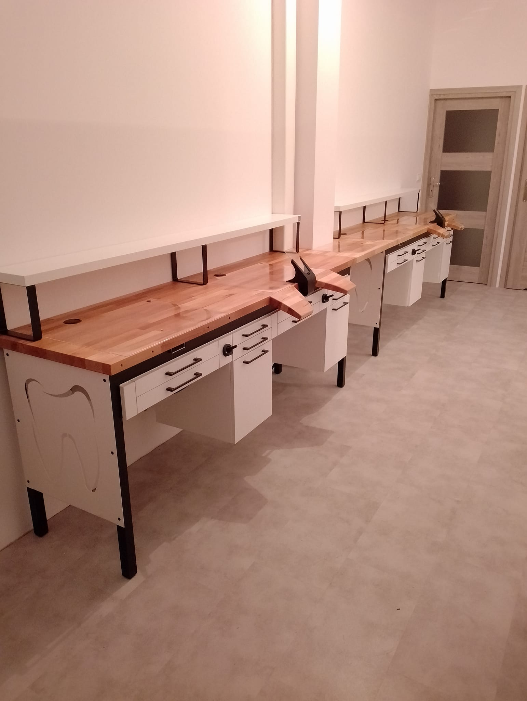

Mebel Protetyczny 1
Opis: Nowoczesny mebel protetyczny zaprojektowany z myślą o ergonomii i funkcjonalności. Idealny do laboratoriów protetycznych.
Cena: 3000 PLN
Wymiary: 120 cm x 60 cm x 75 cm
Materiał: Stal nierdzewna, MDF, szkło hartowane


Mebel Protetyczny 2
Opis: Stylowy mebel protetyczny, który łączy nowoczesny design z wysoką funkcjonalnością. Doskonały wybór dla profesjonalnych laboratoriów.
Cena: 4500 PLN
Wymiary: 140 cm x 70 cm x 80 cm
Materiał: Aluminium, płyta laminowana, szkło hartowane


Mebel Protetyczny 3
Opis: Kompaktowy mebel protetyczny, idealny do małych przestrzeni. Wyposażony w liczne schowki i powierzchnie robocze.
Cena: 2500 PLN
Wymiary: 100 cm x 50 cm x 70 cm
Materiał: Stal nierdzewna, drewno, szkło hartowane